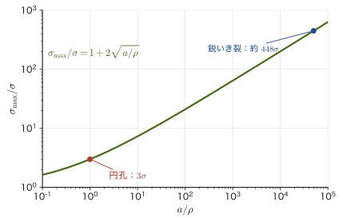
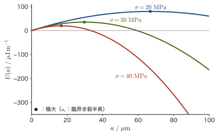
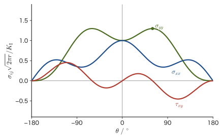

第21章破壊力学の基礎 — 応力集中・グリフィス理論・破壊靱性
前章では，物体の中の応力を3次元のテンソルとしてとらえ直し，はりの曲げやシャフトのねじりで生じる応力分布を調べた．そこでは物体は「傷のない理想的な連続体」として扱われていた．しかし現実の材料には，製造の過程でできる微小な気孔や介在物，研削傷，結晶粒界の欠陥などが必ず存在する．これらの欠陥は，穴やき裂の先端に応力を集中させ，物体全体では十分安全なはずの応力でも，欠陥の近くだけで材料を壊してしまう．本章で学ぶ破壊力学（fracture mechanics）は，「き裂がある物体はどれだけの応力に耐えられるか」「き裂はどれくらいの大きさになったら危険か」を定量的に扱う理論である．
破壊力学は，とりわけセラミックス（陶磁器，ガラス，アルミナ，窒化ケイ素，ジルコニアなど）の強度を理解するために欠かせない．金属は降伏して塑性変形することで欠陥の先端の応力集中を鈍らせるが，セラミックスは室温で塑性変形がほとんど起こらず，き裂の先端が鋭いまま応力を支え続ける．そのため，セラミックスの強度は同じ組成でも試料によって大きくばらつき，時として「前ぶれなく突然壊れる」という印象を与える．マテリアル創成工学科で扱う構造用セラミックス（切削工具，エンジン部品，人工関節，電子部品の基板など）の設計では，この破壊力学の考え方が実務でそのまま使われている．
本章では，まず「なぜ理論的に見積もった強度と実測の強度がこれほど違うのか」という問いから出発し（21.1節），穴やき裂による応力集中（Inglis）と，き裂が伸びるかどうかをエネルギーの出入りだけで判定するGriffithの理論（21.2節）を学ぶ．続いて，き裂先端の応力場を1つの数で表す応力拡大係数 $K_{\mathrm{I}}$（21.3節）と，エネルギー解放率 $\mathcal G$（21.4節）という，破壊力学の中心となる2つの量を導入し，これらが実際にどう測定されるか（21.5節），き裂先端の塑性変形がどう影響するか（21.6節），そして材料によって破壊のしやすさがどう変わるか（21.7節，セラミックスの強靱化機構）までを一通り学ぶ．次の第22章では，本章の考え方を土台に，繰返し荷重による疲労破壊と，強度のばらつきを扱うWeibull統計へと話を進める．
- 原子間の結合力から見積もる理論強度 $\sigma_{\mathrm{th}}$ と，実際の材料の強度がその1/100程度しかない理由
- 楕円形の穴やき裂による応力集中（Inglisの式）と，円孔の応力集中係数が3になること
- Griffithのエネルギー釣り合いの考え方から，き裂を含む板の強度 $\sigma_{\mathrm f}=\sqrt{2E\gamma_{\mathrm s}/(\pi a)}$ を導くこと
- 応力拡大係数 $K_{\mathrm I}$ の定義と，き裂先端近傍の応力場がすべて $K_{\mathrm I}$ だけで決まること（モードI・II・III の区別）
- エネルギー解放率 $\mathcal G$ と $K_{\mathrm I}$ の関係，および「応力基準」と「エネルギー基準」という2つの破壊条件が同じものであること
- 破壊靱性 $K_{\mathrm{IC}}$ の意味と測定法（SENB・CT試験片，平面ひずみ条件，セラミックスのSEPB法・IF法），材料ごとの代表値
- き裂先端の塑性域の大きさ（Irwin，Dugdale）と，小規模降伏・J積分という考え方の入口
- R曲線と，セラミックスの強靱化機構（変態強化・き裂偏向・架橋），金属の延性破壊（ボイドの核生成・成長・合体）
もとにしたノート：本章はノートにない内容を補った章である．関連するノート：望月泰英『物理学ノート 材料力学』（手書き講義ノート，全6ページ）．内容は望月研究室の破壊力学シミュレーター（fracture-derivation.html）と記号・数値例を揃えてある．
注意：本章の記号の約束 — ポアソン比は $\nu$ だけを使う
材料力学ではポアソン比を $\nu=\abs{\varepsilon'/\varepsilon}$，その逆数をポアソン数 $m=1/\nu$ と書く慣例がある（第18章）．しかし次の第22章で導入するWeibull統計のばらつき係数にも，慣例上同じ文字 $m$ が使われる．記号の衝突を避けるため，本章および第22章ではポアソン数 $m$ は使わず，ポアソン比 $\nu$ だけを用いる．また，エネルギー解放率は，ギブス自由エネルギー $G$ や横弾性係数 $G$（第19章）と混同しないよう，筆記体の $\mathcal G$ で表す．
21.1 理論強度とInglisの応力集中
21.1.1 理論強度の見積もり
き裂の話に入る前に，まず「傷もき裂もない理想的な結晶を引っ張ったら，どれくらいの応力で壊れるか」を見積もっておこう．結晶の中では，原子は互いに引力と反発力を及ぼし合いながら，ある平衡距離 $a_0$（原子面の間隔，オングストローム程度，$1\ \text{Å}=10^{-10}\ \mathrm{m}$）を保って並んでいる．外から引張応力をかけて原子面どうしの距離を $a_0+x$ まで引き離すと，最初はHookeの法則にしたがって応力が増えるが，やがて結合が伸びきって弱くなり，ついには切れて応力は0に戻る．この「はじめは直線的に増え，山を越えて0に戻る」という応力-変位の関係を，山型の関数の中でいちばん扱いやすい正弦関数で近似する方法を，Orowan（1949年）にならって使う．
導出：理論強度 $\sigma_{\mathrm{th}}$（Orowanの近似）
原子面の変位を $x$（$0\le x\le \lambda/2$）として，応力を
$$ \sigma(x)=\sigma_{\mathrm{th}}\sin\!\left(\frac{2\pi x}{\lambda}\right) $$と仮定する．$\sigma_{\mathrm{th}}$ は応力の最大値（これから求めたい理論強度），$\lambda/2$ は応力がふたたび0に戻る変位（結合が完全に切れる変位）である．未知数は $\sigma_{\mathrm{th}}$ と $\lambda$ の2つなので，条件を2つ使って決める．
条件1：$x$ が小さいところではHookeの法則に一致する．$x\ll\lambda$ では $\sin\theta\approx\theta$（角度の小さいときの近似，大学数学 第4章 Taylor展開の1次近似）なので，
$$ \sigma(x)\approx\sigma_{\mathrm{th}}\cdot\frac{2\pi x}{\lambda} $$一方，ひずみは $\varepsilon=x/a_0$ なので，Hookeの法則（第19章）は $\sigma=E\varepsilon=Ex/a_0$ である．$x$ の係数を比べると
\begin{equation} \sigma_{\mathrm{th}}\frac{2\pi}{\lambda}=\frac{E}{a_0} \qquad\Longrightarrow\qquad \lambda=\frac{2\pi a_0\sigma_{\mathrm{th}}}{E} \label{eq:21-orowan-cond1} \end{equation}条件2：原子面を引き離す仕事は，新しくできる2枚の表面のエネルギーに等しい．単位面積の原子面を $x=0$ から $x=\lambda/2$ まで引き離すのに応力がする仕事は，$\sigma(x)$ を $x$ について積分したものである（力と変位の積を足し集めたものが仕事，という高校物理の考え方を積分に直したもの）．引き離すと表面が2枚（上下）できるので，これは表面エネルギー $\gamma_{\mathrm s}$（単位面積あたり，単位 $\mathrm{J/m^2}$）の2倍に等しい：
$$ \int_0^{\lambda/2}\sigma_{\mathrm{th}}\sin\!\left(\frac{2\pi x}{\lambda}\right)\dd x =\sigma_{\mathrm{th}}\left[-\frac{\lambda}{2\pi}\cos\!\left(\frac{2\pi x}{\lambda}\right)\right]_0^{\lambda/2} =\frac{\sigma_{\mathrm{th}}\lambda}{2\pi}\bigl(1-(-1)\bigr) =\frac{\sigma_{\mathrm{th}}\lambda}{\pi} $$（$\cos\pi=-1$，$\cos 0=1$ を使った．）これが $2\gamma_{\mathrm s}$ に等しいとおくと
\begin{equation} \frac{\sigma_{\mathrm{th}}\lambda}{\pi}=2\gamma_{\mathrm s} \qquad\Longrightarrow\qquad \lambda=\frac{2\pi\gamma_{\mathrm s}}{\sigma_{\mathrm{th}}} \label{eq:21-orowan-cond2} \end{equation}$\lambda$ を消去する．式\eqref{eq:21-orowan-cond1}と式\eqref{eq:21-orowan-cond2}はどちらも $\lambda$ の式なので，右辺どうしを等しいとおく：
$$ \frac{2\pi a_0\sigma_{\mathrm{th}}}{E}=\frac{2\pi\gamma_{\mathrm s}}{\sigma_{\mathrm{th}}} \qquad\Longrightarrow\qquad \sigma_{\mathrm{th}}^2=\frac{E\gamma_{\mathrm s}}{a_0} $$したがって
\begin{equation} \sigma_{\mathrm{th}}\approx\sqrt{\frac{E\gamma_{\mathrm s}}{a_0}} \label{eq:21-sigma-th} \end{equation}（導出終わり）
数値で見る理論強度
アルミナ（$\mathrm{Al_2O_3}$）相当の値 $E=380\ \mathrm{GPa}$，$\gamma_{\mathrm s}=1.0\ \mathrm{J/m^2}$，$a_0=0.2\ \mathrm{nm}$ を式\eqref{eq:21-sigma-th}に入れると，
$$ \sigma_{\mathrm{th}}=\sqrt{\frac{380\times10^9\times1.0}{0.2\times10^{-9}}}\ \mathrm{Pa} \approx4.36\times10^{10}\ \mathrm{Pa}=43.6\ \mathrm{GPa}\approx\frac{E}{8.7} $$右辺の単位を確かめると，$[\mathrm{Pa\cdot J/m^2}/\mathrm{m}]=[\mathrm{Pa\cdot Pa}]=[\mathrm{Pa^2}]$ で，平方根をとって $\mathrm{Pa}$ になり左辺と一致する（$1\ \mathrm{J/m^2}=1\ \mathrm{N/m}=1\ \mathrm{Pa\cdot m}$ を使った）．ところが実際のアルミナの強度は，代表的な文献値（Ashby & Jonesなどの定番文献による曲げ強度の目安）でおよそ300–400 MPa程度（ここでの値は曲げ強度の目安で，引張強さはそれより低く200–300 MPa程度，表19.1）しかなく，理論強度の1/100以下である（アルミナの破壊靱性 $K_{\mathrm{IC}}$ の代表値は表21.1にまとめる）．どんな材料でも，理論強度は縦弾性係数 $E$ のだいたい1/5～1/15 — 桁で言えば
\begin{equation} \sigma_{\mathrm{th}}\sim\frac{E}{10} \label{eq:21-sigma-th-order} \end{equation}という大きさになることが知られている（係数は原子間力の近似の仕方や $\gamma_{\mathrm s}$，$a_0$ の値で変わるが，「理論強度はヤング率の1桁下」という大きさそのものは動かない）．実測の強度がこれよりずっと小さい理由を説明したのが，次に見るInglisの応力集中と，21.2節のGriffithの理論である．
注意：$\sigma_{\mathrm{th}}$ の係数はモデルによって変わる
式\eqref{eq:21-sigma-th}の係数1（$\sqrt{E\gamma_{\mathrm s}/a_0}$ の前の係数）は，原子間の力を正弦関数で近似したことによる．より現実的な原子間ポテンシャル（Lennard-Jones型など）を使うと，この係数は数倍程度の範囲で変わりうることが知られている．しかし，どの近似を使っても，理論強度が実際の強度よりはるかに大きい（オーダーとして $E/10$ 程度になる）という結論そのものは変わらない．
21.1.2 Inglisの応力集中
実際の強度が理論強度よりずっと小さいことを最初に説明したのは，Inglis（1913年）である．無限に広い板に，長径 $2a$，短径 $2b$（$a\ge b$）の楕円形の穴があいており，長径と垂直な向き（下図でいえば上下方向）に遠方から一様な引張応力 $\sigma$ をかけたとする．弾性論（本章では結果だけを使う．導出には複素関数を使った弾性論の手法が必要で，これは大学数学 第21章で学ぶ複素数の応用の1つである）によると，長径の両端（穴の縁でいちばんとがった点）での応力は
\begin{equation} \sigma_{\max}=\sigma\left(1+\frac{2a}{b}\right) \label{eq:21-inglis} \end{equation}公式21.1 Inglisの式
長径 $2a$，短径 $2b$ の楕円孔をもつ無限板に，長径と垂直な一様引張応力 $\sigma$ をかけたとき，長径の端に生じる最大応力は式\eqref{eq:21-inglis}で与えられる．
$a=b$（円孔）のときは $\sigma_{\max}=3\sigma$ となる．これが「円孔の応力集中係数は3」というよく知られた結果である．この値は，Kirsch（1898年）が円孔のまわりの応力場を極座標で直接求めた厳密解（Inglisより古い，円孔だけに使える特別な場合の解）とも一致する．Kirschの解によれば，円孔（半径 $a$）の縁では，荷重の向きから測った角度 $\theta$ の位置で応力は $\sigma(1-2\cos2\theta)$ となり，荷重と垂直な向き（$\theta=90°$）で最大値 $3\sigma$，荷重の向き（$\theta=0°$）では $-\sigma$（圧縮）になる．円孔のまわりで応力が孔から離れるにつれて $\sigma$ に戻っていくようすは，第18章の例題18.2（サン＝ブナンの原理）でも数値を計算した．
き裂は「先端が鋭い楕円」の極限
式\eqref{eq:21-inglis}で $b\to0$ にすると $\sigma_{\max}\to\infty$ になる．これは，$b=0$ の楕円が「長さ $2a$ の，先端の曲率半径が0の（無限に鋭い）き裂」になるからである．つまり，き裂は，先端がとがった楕円孔の極限として扱える．このことは，21.2節以降でGriffithの理論やき裂先端の応力場を考えるときの出発点になる．一方，先端が丸い穴（$b$ がある程度大きい）は，同じ長さのき裂よりも危険が小さいことも式\eqref{eq:21-inglis}からわかる——丸い気孔がただちに破壊のもとになるわけではない理由である（ただし，気孔の縁に小さなき裂が付随していれば，気孔とき裂を合わせた大きさで効いてくる）．
式\eqref{eq:21-inglis}を，穴の大きさそのものではなく「長さと先端の鋭さの比」で書き直すと，見通しがよくなる．楕円 $(x/a)^2+(y/b)^2=1$ の長径の端 $(a,0)$ の近くを，これと同じ曲率をもつ円（曲率半径 $\rho$）で近似すると，
導出：曲率半径 $\rho=b^2/a$
楕円の式を $y^2=b^2\left(1-\dfrac{x^2}{a^2}\right)$ と変形し，$t=a-x$（先端からの距離，$t\ge0$ の小さい範囲）とおいて $t$ で展開する（Taylor展開の1次近似，大学数学 第4章）．$x=a-t$ を代入すると
$$ y^2=b^2\left(1-\frac{(a-t)^2}{a^2}\right)=b^2\cdot\frac{a^2-(a-t)^2}{a^2}=b^2\cdot\frac{2at-t^2}{a^2}\approx\frac{2b^2}{a}\,t\qquad(t\ll a) $$一方，半径 $\rho$ の円を先端に接するように置くと，同じ座標で $y^2\approx2\rho t$（円の方程式 $x^2+y^2=\rho^2$ を先端付近で展開したもの）と書ける．両者の $t$ の係数を比べると
\begin{equation} 2\rho=\frac{2b^2}{a} \qquad\Longrightarrow\qquad \rho=\frac{b^2}{a} \label{eq:21-rho} \end{equation}（導出終わり）
式\eqref{eq:21-rho}より $b=\sqrt{a\rho}$ なので，$2a/b=2a/\sqrt{a\rho}=2\sqrt{a/\rho}$ と書き直せる．したがって式\eqref{eq:21-inglis}は
\begin{equation} \sigma_{\max}=\sigma\left(1+2\sqrt{\frac{a}{\rho}}\right)\approx2\sigma\sqrt{\frac{a}{\rho}}\qquad(a\gg\rho) \label{eq:21-inglis-rho} \end{equation}と表せる．図21.2は，この式を対数目盛りで描いたものである．集中の度合いを決めるのは，穴やき裂の長さ $a$ そのものではなく，「長さ $a$ と先端の鋭さ $\rho$ の比」であることがはっきり見える．

応用：原子1個ぶんまで鋭いき裂ならどうなるか
長さ $a=10\ \mu\mathrm{m}$ のき裂の先端が，原子1個ぶんまで鋭い（$\rho=a_0=0.2\ \mathrm{nm}$）としよう．このとき $a/\rho=5\times10^4$ で，式\eqref{eq:21-inglis-rho}より集中係数は $1+2\sqrt{5\times10^4}\approx448$ である．外から $\sigma=100\ \mathrm{MPa}$ をかけただけで，先端の応力は $448\times100\ \mathrm{MPa}\approx44.8\ \mathrm{GPa}$ となり，21.1.1節で求めたアルミナの理論強度 $43.6\ \mathrm{GPa}$ を超えてしまう．つまり，たった1本の鋭いき裂があるだけで，理論強度に匹敵する応力が先端に生じうる．ただし，弾性論は連続体の理論なので，原子1個ぶんの鋭さの先端の応力を正確に扱っているわけではなく，実際の $\rho$ を直接測ることもできない．そこでGriffith（1921年）は，先端の応力の値そのものを問わず，き裂が伸びるときのエネルギーの出入りだけで破壊の条件を決める方法を考えた．これが次の21.2節の主題である．
例題21.1 円孔の応力集中係数はなぜ3になるか
無限に広い板に半径 $a$ の円形の穴があいており，遠方から一様な引張応力 $\sigma$ がかかっている．Inglisの式\eqref{eq:21-inglis}を使って，穴の縁に生じる最大応力を求め，よく知られた「応力集中係数3」を導け．また，この結果はKirschの厳密解とどう対応するか説明せよ．
解答 円孔は，楕円の長径と短径が等しい特別な場合（$a=b$）である．これを式\eqref{eq:21-inglis}に代入すると，
$$ \sigma_{\max}=\sigma\left(1+\frac{2a}{a}\right)=\sigma(1+2)=3\sigma $$したがって，穴の縁の最大応力は遠方の応力の3倍になる．これが「円孔の応力集中係数は3」という結果である．この値は，Kirschが円孔について直接求めた厳密解で，荷重と垂直な向き（$\theta=90°$）の応力が $\sigma(1-2\cos180°)=\sigma(1+2)=3\sigma$ となることとも一致する（Inglisの楕円の解は，円孔を特別な場合として含む，より一般的な結果である）．なお，同じ円孔でも，荷重の向き（$\theta=0°$）の縁では $\sigma(1-2\cos0°)=-\sigma$ となり，圧縮になることも確かめられる．
（対応：fracture-derivation.html §3「応力集中（Inglis）」）
21.2 Griffithのエネルギー釣り合い
Griffith（1921年）の着想は，き裂の先端で何が起きているかを問わず，き裂が少しだけ伸びたときのエネルギーの帳尻だけを見ることだった．き裂が伸びると，(i) き裂のまわりで材料がゆるみ弾性ひずみエネルギーが解放される一方，(ii) 新しい2枚の表面ができるのでエネルギーが必要になる．(i)が(ii)を上回るなら，き裂は外から何もしなくても自然に伸びていく．この節では，無限に広い，厚さ1（単位厚さ）の板に，全長 $2a$ の貫通き裂があり，き裂と垂直な向きに遠方から一様な引張応力 $\sigma$ がかかっている状況（平面応力）を考える．
注意：$a$ は「き裂の半長」
板を貫通するき裂では，全長は $2a$ であり，$a$ はその半分（半長）である．表面から入ったき裂（縁き裂）では，$a$ はき裂の深さそのものを指す．文献によって $a$ の定義（全長か半長か）が違うことがあるので，数値を比べるときは必ず確認すること．
21.2.1 き裂を入れると解放される弾性エネルギー
弾性論によると（21.1節で見たように，き裂はInglisの楕円孔で $b\to0$ とした極限だから，その解を使う），このき裂は薄い楕円形に口を開く．き裂の中心を原点，き裂に沿って $x$ 軸をとると，上側のき裂面の変位は
$$ v(x)=\frac{2\sigma}{E}\sqrt{a^2-x^2}\qquad(-a\le x\le a) $$である（下側の面は $-v(x)$ だけ動く．この結果は弾性論から借りる）．この開口の形を使って，き裂を入れることで解放される弾性エネルギーを求めよう．
導出：解放される弾性エネルギー $U_E=\pi\sigma^2a^2/E$
次の手順で考える．き裂のない板に $\sigma$ がかかった状態から出発し，き裂を入れる面を仮想的に切るが，切った面にはもともとかかっていた応力 $\sigma$ を「押さえの力」として残しておく．押さえている間は，板はき裂がない状態と変わらない．この押さえの力を $\sigma$ から0までゆっくり減らすと，き裂面は0から $v(x)$ まで開いていく．このとき材料が押さえの力に対してする仕事が，き裂を入れることで解放される弾性エネルギーである．
線形弾性体では，押さえの力と開きの量は比例して変わるので，仕事は「最初の力 $\times$ 最終の変位 $\times\ 1/2$」（力—変位のグラフが原点を通る直線になるときの，直線の下の三角形の面積）で計算できる．上下2枚の面について足し合わせると，
$$ U_E=2\times\int_{-a}^{a}\frac{1}{2}\sigma\,v(x)\,\dd x =\sigma\int_{-a}^{a}\frac{2\sigma}{E}\sqrt{a^2-x^2}\,\dd x =\frac{2\sigma^2}{E}\int_{-a}^{a}\sqrt{a^2-x^2}\,\dd x $$最後の積分 $\displaystyle\int_{-a}^{a}\sqrt{a^2-x^2}\,\dd x$ は，$y=\sqrt{a^2-x^2}$（半径 $a$ の上半円）の下の面積，すなわち半円の面積 $\pi a^2/2$ にほかならない（大学数学 第5章の定積分と面積の関係，あるいは単純に円の面積の公式）．したがって
\begin{equation} U_E=\frac{2\sigma^2}{E}\cdot\frac{\pi a^2}{2}=\frac{\pi\sigma^2a^2}{E} \label{eq:21-UE} \end{equation}（導出終わり）
イメージ：外力を一定に保つか，つかみを固定するか
外力を一定に保つ（定荷重）場合は，き裂が開くと外力もさらに仕事をするので，材料に蓄えられたひずみエネルギー自体はかえって増える．つかみを固定する（定変位）場合は，ひずみエネルギーそのものが減る．見かけは正反対だが，「ひずみエネルギーから外力のした仕事を引いた，系全体のポテンシャルエネルギー」が下がる量は，線形弾性体ではどちらの場合も同じになることが示せる．式\eqref{eq:21-UE}の $U_E$ は，この「系全体として解放される量」として読む．
21.2.2 新しくできる表面のエネルギー
き裂の長さは $2a$，厚さは1，そして新しくできる面は上下2枚なので，必要な表面エネルギーは
\begin{equation} U_S=2\times(2a\times1)\times\gamma_{\mathrm s}=4a\gamma_{\mathrm s} \label{eq:21-US} \end{equation}である．$\gamma_{\mathrm s}$ は単位面積あたりの表面エネルギー（21.1節で導入した，理論強度の式にも現れた量）．
21.2.3 全エネルギーの極大を求める
き裂のない状態を基準にとると，き裂を長さ $2a$ まで入れたときの系全体のエネルギーの変化は，式\eqref{eq:21-UE}の解放ぶんを引き，式\eqref{eq:21-US}の表面エネルギーを足したものである：
\begin{equation} U(a)=-\frac{\pi\sigma^2a^2}{E}+4\gamma_{\mathrm s}a \label{eq:21-Ua} \end{equation}第1項は $a^2$ に比例して下がり，第2項は $a$ に比例して上がる．$a$ が小さいうちは第2項（表面エネルギー）が勝つが，$a$ が大きくなると第1項（弾性エネルギーの解放）が勝つ．したがって $U(a)$ は図21.3のように山型になる．き裂が伸びるかどうかは，このエネルギーの傾き $\dd U/\dd a$ の符号で決まる：
イメージ：山を越えるボール
$\dd U/\dd a\gt0$ のうちは，き裂が伸びるとエネルギーが増えるので，き裂は（外からエネルギーを与えない限り）伸びない．坂を上ろうとするボールが自然には転がり上がらないのと同じである．ところが $\dd U/\dd a\lt0$ になると，伸びるほどエネルギーが下がるので，き裂はどんどん伸びて止まらなくなる——山を越えたボールが坂を転がり落ちるのと同じ状況である．境目の $\dd U/\dd a=0$ の点は，山の頂上（不安定なつり合い）にあたる．
式\eqref{eq:21-Ua}を $a$ で微分すると
$$ \frac{\dd U}{\dd a}=-\frac{2\pi\sigma^2a}{E}+4\gamma_{\mathrm s} $$境目 $\dd U/\dd a=0$ を解くと，
$$ \frac{2\pi\sigma^2a}{E}=4\gamma_{\mathrm s} \qquad\Longrightarrow\qquad \sigma^2=\frac{2E\gamma_{\mathrm s}}{\pi a} $$これを「与えられたき裂の半長 $a$ で壊れる応力（強度）」として読むと，Griffithの式が得られる：
公式21.2 Griffithの式（平面応力）
無限に広い板に半長 $a$ の貫通き裂があるとき，き裂が不安定に伸び始める応力（強度）は
\begin{equation} \sigma_{\mathrm f}=\sqrt{\frac{2E\gamma_{\mathrm s}}{\pi a}} \label{eq:21-griffith} \end{equation}である．逆に，与えられた応力 $\sigma$ のもとで安定にいられるき裂の半長の上限（臨界き裂長さ）は $a_{\mathrm c}=2E\gamma_{\mathrm s}/(\pi\sigma^2)$ である．
$U(a)$ の2階微分は $\dd^2U/\dd a^2=-2\pi\sigma^2/E\lt0$ なので，この点はたしかに極大（山の頂上）である．$a\lt a_{\mathrm c}$ ではき裂は伸びず，$a=a_{\mathrm c}$ を境に不安定に伸び始める——セラミックスが前ぶれなく突然壊れるのは，このためである．
平面ひずみへの補正
式\eqref{eq:21-griffith}は，板の厚み方向に自由に変形できる薄い板（平面応力，thickness方向の応力 $\sigma_{zz}=0$）を仮定している．厚い板の内部のように，厚み方向の変形が周囲の材料に拘束されている場合（平面ひずみ，$\varepsilon_{zz}=0$）では，同じ弾性論の計算をやり直すと，$E$ の代わりに $E/(1-\nu^2)$ が現れることが示せる．したがって平面ひずみでのGriffithの式は
$$ \sigma_{\mathrm f}=\sqrt{\frac{2\gamma_{\mathrm s}}{\pi a}\cdot\frac{E}{1-\nu^2}} $$となる（$\nu$ はPoisson比，第18章）．$\nu\approx0.2$–$0.3$ の材料では $1/(1-\nu^2)$ は1.04–1.10程度なので，補正は数%にとどまる．本章では，21.4節以降で「$E$」と書く代わりに，平面応力なら$E$，平面ひずみなら $E/(1-\nu^2)$ を意味する記号 $E'$ を使う（本章限りの略記で，体積弾性係数 $K$（第19章）とは無関係である）．

応用：Griffithのガラス繊維の実験
Griffithは，細いガラス繊維ほど強度が高くなることを実際に測定して確かめた．太い棒には研削傷や気孔などの大きな欠陥が含まれやすいが，細い繊維（特に炎で引き伸ばして作った直後のもの）には大きな欠陥が入り込む余地が少なく，式\eqref{eq:21-griffith}で $a$ が小さいぶん強度 $\sigma_{\mathrm f}$ が高くなる．現代の光ファイバーやガラス繊維強化プラスチック（GFRP）の強化繊維が高強度である理由の一端も，同じ「欠陥の小ささ」にある．
例題21.2 傷のある窓ガラスの強度
ソーダ石灰ガラス（$E=70\ \mathrm{GPa}$）でできた窓ガラスの表面に，長さ $100\ \mu\mathrm{m}$（貫通き裂と仮定し，半長 $a=50\ \mu\mathrm{m}$）の引っかき傷ができてしまった．ガラスの表面エネルギーを $\gamma_{\mathrm s}=0.6\ \mathrm{J/m^2}$ として，この傷があるとガラスはどれくらいの引張応力で割れるか，Griffithの式を使って求めよ．
解答 式\eqref{eq:21-griffith}に $E=70\times10^9\ \mathrm{Pa}$，$\gamma_{\mathrm s}=0.6\ \mathrm{J/m^2}$，$a=50\times10^{-6}\ \mathrm{m}$ を代入する：
$$ \sigma_{\mathrm f}=\sqrt{\frac{2\times70\times10^9\times0.6}{\pi\times50\times10^{-6}}}\ \mathrm{Pa} =\sqrt{5.35\times10^{14}}\ \mathrm{Pa} \approx2.3\times10^{7}\ \mathrm{Pa}=23\ \mathrm{MPa} $$単位を確かめる：分子 $[\mathrm{Pa\cdot J/m^2}]=[\mathrm{Pa\cdot Pa\cdot m}]$，これを $[\mathrm m]$（分母）で割ると $[\mathrm{Pa^2}]$，平方根で $[\mathrm{Pa}]$ となり正しい．傷のないガラスの強度が数百MPaに達することもあるのに対し，$100\ \mu\mathrm{m}$ 程度の目に見えるかどうかという傷1本で，強度は数十MPa程度まで大きく低下する．窓ガラスが，指で押した程度ではなんともないのに，小さな飛び石の傷から思わぬ低い応力で割れることがあるのは，この計算が示す通りである．
（対応：fracture-derivation.html §2「理論強度を見積もる」，§4「Griffithのエネルギー収支」）
21.3 応力拡大係数とき裂先端の応力場
Griffithは系全体のエネルギーの出入りを見た．これに対しIrwin（1957年）は，視点をき裂の先端に移し，先端近くの応力場の「強さ」をたった1つの数で表す方法を考えた．結論を先に言うと，Griffithのエネルギーの見方とIrwinの応力場の見方は，同じ破壊条件を2つの角度から見たものであり，21.4節でその対応を確認する．
21.3.1 き裂先端の応力場
線形弾性体では，き裂先端からの距離 $r$ が $a$ より十分小さいところで，き裂面の延長線上の引張応力は次のような形になることが，Westergaard（1939年）らの複素応力関数を使った解析（本章では結果だけを使う）から示される：
\begin{equation} \sigma_{yy}(r)\approx\frac{K_{\mathrm I}}{\sqrt{2\pi r}}\qquad(r\ll a,\ \theta=0) \label{eq:21-Kfield-axis} \end{equation}$r\to0$ で $1/\sqrt r$ のように発散するが，発散の形そのものはき裂の長さや試料の形によらず常に同じで，き裂の長さ・形状・遠方の応力といった違いはすべて，比例係数 $K_{\mathrm I}$ の中に押し込められる．この $K_{\mathrm I}$ を応力拡大係数（stress intensity factor）と呼ぶ．添字Iは，後で見る「モードI」（き裂を開く向きの変形）を表す．
定義21.1 応力拡大係数 $K_{\mathrm I}$
幅の広い（き裂長さに比べて十分大きい）板に，遠方から一様応力 $\sigma$ がかかっているとき，モードIの応力拡大係数を
\begin{equation} K_{\mathrm I}=Y\sigma\sqrt{\pi a} \label{eq:21-KI} \end{equation}と定義する．$Y$ は形状係数（無次元）で，板を貫通する中央き裂（21.2節で扱った形）では $Y=1.0$，板の縁（自由表面）から入った，前縁がまっすぐな縁き裂では，片側の拘束がなく口を開きやすいぶん $Y\approx1.12$ になる．$K_{\mathrm I}$ の単位は，$\sigma$ が$\mathrm{Pa}$，$\sqrt{\pi a}$ が $\sqrt{\mathrm m}$ なので，$\mathrm{Pa\cdot m^{1/2}}$（実務では $\mathrm{MPa\cdot m^{1/2}}$，「メガパスカル・ルートメートル」と読む）である．
注意：応力拡大係数 $K_{\mathrm I}$ と，21.1節の応力集中係数を混同しない
21.1節で見た「応力集中係数」（$\sigma_{\max}/\sigma$，円孔で3）は無次元の比であり，穴やき裂の先端という1点での応力の何倍かを表す量だった．これに対し応力拡大係数 $K_{\mathrm I}$ は単位をもつ量（$\mathrm{Pa\cdot m^{1/2}}$）であり，先端からの距離 $r$ に応じて変化する応力場全体の強さを表す．先端に近づく（$r\to0$）と応力そのものは常に無限大に発散するので，「先端の応力の値」では破壊を論じられない．そこで，発散のしかたが常に同じ形（$1/\sqrt r$）であることを利用し，その前の係数 $K_{\mathrm I}$ で場の強さを表す，というのが応力拡大係数の考え方である．また，$K_{\mathrm I}$ を，添字なしの体積弾性係数 $K$（第19章）と混同しないよう注意する．本章では，添字なしの $K$ は使わない．
式\eqref{eq:21-Kfield-axis}はき裂の延長線上（$\theta=0$）だけの式だったが，実際には先端のまわり全体に応力が広がっている．先端を原点とする極座標 $(r,\theta)$（$\theta$ はき裂の延長線から測った角度）で表すと，モードIの応力場は次の形になることが，Westergaardの複素応力関数を使った解析（Irwin，1957年）から示される：
定理21.1 モードIのき裂先端応力場（K場）
き裂先端に近い領域（$r\ll a$）で，モードIの応力成分は
\begin{align} \sigma_{xx}&=\frac{K_{\mathrm I}}{\sqrt{2\pi r}}\cos\frac\theta2\left[1-\sin\frac\theta2\sin\frac{3\theta}2\right] \label{eq:21-Kfield-xx}\\ \sigma_{yy}&=\frac{K_{\mathrm I}}{\sqrt{2\pi r}}\cos\frac\theta2\left[1+\sin\frac\theta2\sin\frac{3\theta}2\right] \label{eq:21-Kfield-yy}\\ \tau_{xy}&=\frac{K_{\mathrm I}}{\sqrt{2\pi r}}\cos\frac\theta2\sin\frac\theta2\cos\frac{3\theta}2 \label{eq:21-Kfield-xy} \end{align}である（$x$ 軸はき裂の延長線，$y$ 軸はき裂を開く向き）．$\theta=0$ とおくと，式\eqref{eq:21-Kfield-yy}は式\eqref{eq:21-Kfield-axis}に一致する．
式\eqref{eq:21-Kfield-yy}などの角度に依存する部分（$\cos(\theta/2)[1\pm\sin(\theta/2)\sin(3\theta/2)]$ など）は，$a$ にも $\sigma$ にもよらない普遍的な関数である．き裂の長さや形，遠方の応力といった違いは，すべて $K_{\mathrm I}$ という1つの数の中に入っている——これが「$K_{\mathrm I}$ が先端の場の強さを1つの数で表す」ことの中身である．図21.4は，この角度に依存する部分を $\theta=-180°$ から $180°$ までプロットしたものである．

なぜ先端の応力が無限大でも困らないのか
式\eqref{eq:21-Kfield-xx}–\eqref{eq:21-Kfield-xy}は連続体の弾性論の答えであり，$r\to0$ で無限大に発散する．実際の先端では，原子の大きさ程度の丸みや，わずかな塑性変形・非線形の領域（プロセスゾーン）のために応力は有限にとどまる．$K_{\mathrm I}$ は，その小さな領域の外側を取り巻く弾性場の強さを表す量であり，「外側の場が同じなら，内側（先端）で起きることも同じはずだ」というのが，$K_{\mathrm I}$ で破壊を論じる根拠になっている．先端の内部で実際に何が起きるかは，21.6節で改めて扱う．
21.3.2 モードI・II・III — き裂の3つの変形様式
ここまで扱ってきたのは，き裂を垂直に開く向きの変形（モードI，開口型）だけだったが，き裂の変形にはほかに2つの様式がある．いずれも，き裂面に相対的にどの向きにずれが生じるかで区別される．
- モードI（開口型，opening mode）：き裂面に垂直な引張応力によって，き裂が口を開くように変形する．本章でここまで扱ってきたのはこのモードで，最も基本的で危険な様式である．
- モードII（面内せん断型，in-plane shear mode）：き裂の進行方向と平行に，き裂面内でずれるせん断変形．
- モードIII（面外せん断型，out-of-plane shear mode，逆せん断型ともいう）：き裂の前縁と平行に，面外方向にずれるせん断変形．丸棒のねじり破壊などで現れる．
実際の破壊の多くはモードIが支配的である（脆性材料のき裂は，21.1節と同様，最大主応力に垂直な向きに進もうとする性質があるため，斜めの荷重がかかっても，き裂は自然にモードIが卓越する向きに曲がっていく）．一般の荷重では3つのモードが重なり合うが，本章ではモードIを中心に扱う．モードII・IIIにも，それぞれ応力拡大係数 $K_{\mathrm{II}}$，$K_{\mathrm{III}}$ が同様に定義される．
Irwin–Orowanの修正 — 金属での塑性仕事
21.2節のGriffithの理論は，き裂が伸びるのに必要なのは新しい表面をつくるエネルギー $\gamma_{\mathrm s}$（表面エネルギー，理想的な脆性体の値）だけだと仮定していた．しかし金属では，き裂先端のごく近くで塑性変形が起こり，そこで消費される塑性仕事が表面エネルギーよりずっと大きくなる．Irwin（1948年）とOrowan（1949年）は，これを踏まえ，$\gamma_{\mathrm s}$ の代わりに，塑性仕事の分も含めた実効表面エネルギー $\gamma_{\mathrm{eff}}$（$\gamma_{\mathrm{eff}}\gg\gamma_{\mathrm s}$）を使うようGriffithの式を修正した．21.4節・21.5節で見るように，金属の破壊靱性がセラミックスよりはるかに大きいのは，主にこの塑性仕事の違いによる．また，先端付近が塑性変形によって開き丸まる（先端の実効的な曲率半径 $\rho$ が，原子スケールから塑性域程度の大きさまで実質的に大きくなる）ことも，21.1節の式\eqref{eq:21-inglis-rho}のInglisの関係から，弾性論的な応力集中そのものを緩和する——鋭いき裂ほど危険という21.1節の議論が，塑性変形によって和らげられるということである．
例題21.3 き裂先端の応力場を計算する
ある部材の表面き裂の先端で，応力拡大係数が $K_{\mathrm I}=20\ \mathrm{MPa\,m^{1/2}}$ であった．先端から $r=1\ \mathrm{mm}$，角度 $\theta=45°$ の位置での $\sigma_{xx}$，$\sigma_{yy}$，$\tau_{xy}$ をそれぞれ求めよ．
解答 まず係数 $K_{\mathrm I}/\sqrt{2\pi r}$ を計算する．$r=1\times10^{-3}\ \mathrm m$ として，
$$ \frac{K_{\mathrm I}}{\sqrt{2\pi r}}=\frac{20\times10^6}{\sqrt{2\pi\times10^{-3}}}\ \mathrm{Pa}=\frac{20\times10^6}{0.0792}\ \mathrm{Pa}\approx2.52\times10^{8}\ \mathrm{Pa}=252\ \mathrm{MPa} $$次に $\theta=45°$ での三角関数の値を使う（$\theta/2=22.5°$，$3\theta/2=67.5°$）：$\cos22.5°=0.924$，$\sin22.5°=0.383$，$\sin67.5°=0.924$，$\cos67.5°=0.383$．これらを式\eqref{eq:21-Kfield-xx}–\eqref{eq:21-Kfield-xy}に代入する：
$$ \sigma_{yy}=252\ \mathrm{MPa}\times0.924\times[1+0.383\times0.924]=252\times0.924\times1.354\approx315\ \mathrm{MPa} $$ $$ \sigma_{xx}=252\ \mathrm{MPa}\times0.924\times[1-0.383\times0.924]=252\times0.924\times0.646\approx151\ \mathrm{MPa} $$ $$ \tau_{xy}=252\ \mathrm{MPa}\times0.924\times0.383\times0.383\approx34\ \mathrm{MPa} $$$\theta=0$（き裂の正面）での値 $\sigma_{xx}=\sigma_{yy}=252\ \mathrm{MPa}$，$\tau_{xy}=0$ と比べると，$\theta=45°$ では $\sigma_{yy}$（き裂を開く成分）がやや大きく，$\sigma_{xx}$（き裂と平行な成分）は小さくなり，せん断応力 $\tau_{xy}$ もゼロでなくなる．このように，先端のまわりの応力の大きさと向きは角度によって変わるが，その大きさの係数はすべて $K_{\mathrm I}$ ひとつで決まっている．
21.4 エネルギー解放率 $\mathcal G$ と2つの破壊条件
21.4.1 エネルギー解放率 $\mathcal G$
21.2節では，き裂の半長が $a$ だけ増えたときに解放される弾性エネルギー全体 $U_E=\pi\sigma^2a^2/E$（式\eqref{eq:21-UE}）を求めた．これを，き裂が単位面積だけ進むあたりに解放されるエネルギーとして書き直したものを，エネルギー解放率 $\mathcal G$（筆記体の $G$．ギブス自由エネルギー $G$ や横弾性係数 $G$——第19章——と区別するために，破壊力学ではこの文字を使う）と呼ぶ．
定義21.2 エネルギー解放率 $\mathcal G$
き裂の面積が単位量だけ増えるときに解放される弾性エネルギーを，エネルギー解放率 $\mathcal G$（単位 $\mathrm{J/m^2}$）と定義する．全長 $2a$（半長 $a$）のき裂には先端が2つあり，$a$ が $\dd a$ だけ増えると両端がそれぞれ $\dd a$ ずつ進むので，き裂の面積（厚さ1）は $2\,\dd a$ 増える．したがって
$$ \mathcal G=\frac{\dd U_E}{\dd(2a)} $$式\eqref{eq:21-UE}を使ってこれを計算すると，
\begin{equation} \mathcal G=\frac12\frac{\dd}{\dd a}\left(\frac{\pi\sigma^2a^2}{E}\right) =\frac12\cdot\frac{2\pi\sigma^2a}{E} =\frac{\pi\sigma^2a}{E} \label{eq:21-G-planestress} \end{equation}である（平面応力．平面ひずみでは21.2節の注意にならい $E\to E/(1-\nu^2)$）．一方，21.3節の式\eqref{eq:21-KI}で $Y=1$ とすると $K_{\mathrm I}^2=\pi\sigma^2a$ なので，式\eqref{eq:21-G-planestress}はそのまま
\begin{equation} \mathcal G=\frac{K_{\mathrm I}^2}{E'} \qquad\left(E'=\begin{cases}E&\text{（平面応力）}\\[2pt] E/(1-\nu^2)&\text{（平面ひずみ）}\end{cases}\right) \label{eq:21-G-K} \end{equation}定理21.2 $\mathcal G$ と $K_{\mathrm I}$ の関係
き裂先端のエネルギー解放率 $\mathcal G$（Griffithの見方）と応力拡大係数 $K_{\mathrm I}$（Irwinの見方）は，式\eqref{eq:21-G-K}によって1本の式で結ばれる．すなわち，系全体のエネルギーの出入りを見る見方と，先端の応力場の強さを見る見方は，数学的に同じ内容を表している．
ここで $E'$ という書き方を導入したのは，21.2節の注意でも述べたように，平面応力と平面ひずみで $E$ と $E/(1-\nu^2)$ のどちらを使うかを毎回書き分けずにすませるためである．以後，本章では特に断らない限り $E'$ をこの意味で使う．
21.4.2 2つの破壊条件は同じもの
表面エネルギーの側も同じ数え方をする．き裂の面積が単位量増えると，表面は上下2枚ぶん増えるので，必要なエネルギーは $2\gamma_{\mathrm s}$ である．「$\mathcal G$ が $2\gamma_{\mathrm s}$ に達したら壊れる」という条件（Griffithのエネルギー基準）は，
$$ \frac{\pi\sigma^2a}{E}=2\gamma_{\mathrm s} \quad\Longleftrightarrow\quad \sigma=\sqrt{\frac{2E\gamma_{\mathrm s}}{\pi a}} $$となり，式\eqref{eq:21-griffith}と完全に一致する．これを応力拡大係数の言葉で言い直すと，「$K_{\mathrm I}$ が材料に固有の臨界値（21.5節で $K_{\mathrm{IC}}$ と呼ぶ）に達したら壊れる」（Irwinの応力基準）になる．式\eqref{eq:21-G-K}で $\mathcal G$ を臨界値 $\mathcal G_{\mathrm c}$ に，$K_{\mathrm I}$ を臨界値 $K_{\mathrm{IC}}$ に置き換えれば，両者の関係は次のようにまとめられる：
定理21.3 2つの破壊条件の等価性
き裂が不安定に伸び始める条件は，次の2通りの書き方ができ，互いに同値である．
\begin{align} \textbf{応力基準：}&\quad K_{\mathrm I}=Y\sigma\sqrt{\pi a}\ \ge\ K_{\mathrm{IC}} \notag\\ \textbf{エネルギー基準：}&\quad \mathcal G=\frac{K_{\mathrm I}^2}{E'}\ \ge\ \mathcal G_{\mathrm c}=\frac{K_{\mathrm{IC}}^2}{E'} \notag \end{align}$\mathcal G_{\mathrm c}$ を破壊エネルギー（き裂進展抵抗）と呼ぶ．理想的な脆性体（塑性変形をまったくしない）なら，21.2節・21.3節のIrwin–Orowanの修正を踏まえて $\mathcal G_{\mathrm c}=2\gamma_{\mathrm{eff}}$（$\gamma_{\mathrm{eff}}$：実効表面エネルギー，塑性仕事を含む）と書ける．実測の $K_{\mathrm{IC}}$ から $\gamma_{\mathrm{eff}}=\mathcal G_{\mathrm c}/2=K_{\mathrm{IC}}^2/(2E')$ を逆算すれば，どれだけ塑性仕事が効いているかの目安になる（21.7節で数値例を見る）．
21.4.3 許容できるき裂の大きさ
定理21.3の応力基準を，$a$ について解くと，与えられた設計応力 $\sigma$ のもとで安全に許容できるき裂の大きさの上限が求まる：
\begin{equation} a_{\mathrm c}=\frac1\pi\left(\frac{K_{\mathrm{IC}}}{Y\sigma}\right)^2 \label{eq:21-ac} \end{equation}これは，破壊力学が構造物の設計に使われるときの最も基本的な式である．$a_{\mathrm c}$ より小さいき裂なら安全，それを超えるき裂があれば危険，という判断ができる．
例題21.4 鋼板の臨界き裂長さと平面ひずみの効果
構造用鋼（$K_{\mathrm{IC}}=50\ \mathrm{MPa\,m^{1/2}}$，$E=210\ \mathrm{GPa}$，$\nu=0.30$）でできた板に，設計応力 $\sigma=200\ \mathrm{MPa}$ がかかっている．(1) 表面き裂（$Y=1.12$）の場合の許容き裂深さ $a_{\mathrm c}$ を求めよ．(2) この板の半長 $5\ \mathrm{mm}$ のき裂について，平面応力と平面ひずみそれぞれのエネルギー解放率 $\mathcal G$ を計算し，比較せよ．
解答（1） 式\eqref{eq:21-ac}に数値を代入する：
$$ a_{\mathrm c}=\frac1\pi\left(\frac{50\times10^6}{1.12\times200\times10^6}\right)^2\,\mathrm m =\frac1\pi\times(0.2232)^2\ \mathrm m \approx1.59\times10^{-2}\ \mathrm m=15.9\ \mathrm{mm} $$つまり，深さ約16 mmを超える表面き裂があると，この設計応力のもとで不安定破壊が起こりうる．ただし，21.5節で見る平面ひずみの寸法条件を確認する必要がある（この例では後述の例題21.6で確認する）．
解答（2） 平面応力では式\eqref{eq:21-G-planestress}をそのまま使う：
$$ \mathcal G_{\text{平面応力}}=\frac{\pi\sigma^2a}{E}=\frac{\pi\times(200\times10^6)^2\times5\times10^{-3}}{210\times10^9}\ \mathrm{J/m^2}\approx2990\ \mathrm{J/m^2} $$平面ひずみでは $E\to E/(1-\nu^2)$，すなわち $\mathcal G$ には $(1-\nu^2)$ が掛かる：
$$ \mathcal G_{\text{平面ひずみ}}=(1-\nu^2)\,\mathcal G_{\text{平面応力}}=(1-0.30^2)\times2990\ \mathrm{J/m^2}=0.91\times2990\ \mathrm{J/m^2}\approx2720\ \mathrm{J/m^2} $$平面ひずみのほうが，同じ $\sigma,a$ に対して $\mathcal G$ が約9%小さい．これは，平面ひずみでは厚み方向の変形が拘束されるぶん，き裂が開きにくく，解放される弾性エネルギーがわずかに少なくなるためである．$\nu\approx0.2$–$0.3$ の通常の材料では，この差は数%程度にとどまる．
（対応：fracture-derivation.html §5「応力拡大係数とエネルギー解放率」）
21.5 破壊靱性 $K_{\mathrm{IC}}$ とその測定
21.5.1 破壊靱性 $K_{\mathrm{IC}}$ の定義
21.4節で見たように，き裂が不安定に伸び始める条件は，応力拡大係数 $K_{\mathrm I}$ がある臨界値に達することだった．この材料に固有の臨界値を破壊靱性（fracture toughness）と呼ぶ．
定義21.3 破壊靱性 $K_{\mathrm{IC}}$
モードIの荷重のもとで，き裂が不安定に（自発的に，加速しながら）伸び始めるときの応力拡大係数の臨界値を，平面ひずみ破壊靱性 $K_{\mathrm{IC}}$（添字ICは「モードI，Critical」の意味）と呼ぶ．$K_{\mathrm{IC}}$ は，弾性係数 $E$ や降伏応力 $\sigma_{\mathrm y}$ と同様，材料に固有の値として測定・カタログ化される（ただし21.5.2節の寸法条件を満たして測定された場合に限る）．
$K_{\mathrm{IC}}$ が大きい材料ほど，同じき裂の大きさでも壊れにくい——「靱性が高い」（tough）という．逆に $K_{\mathrm{IC}}$ が小さい材料は「脆い」（brittle）．表21.1に，代表的な材料の $K_{\mathrm{IC}}$ の目安を示す．
| 材料 | $K_{\mathrm{IC}}\ (\mathrm{MPa\,m^{1/2}})$ | 備考 |
|---|---|---|
| ソーダ石灰ガラス | 0.7–0.8 | 理想的な脆性体に近い |
| PMMA（アクリル樹脂） | 0.9–1.6 | ガラス状高分子 |
| アルミナ（$\mathrm{Al_2O_3}$） | 3–5 | 本章の数値例では3.5を使用 |
| 窒化ケイ素（$\mathrm{Si_3N_4}$） | 4–8 | 柱状粒による架橋強化（21.7節） |
| ジルコニア（Y-TZP） | 8–15 | 変態強化（21.7節）．測定法による差が大きい |
| 鋳鉄（片状黒鉛） | 6–20 | 黒鉛の薄片が内部き裂として働き，ばらつきが大きい |
| アルミニウム合金 | 20–45 | 合金・熱処理で大きく変わる |
| 構造用鋼 | 50–150 | 高強度鋼ほど低靱性の傾向 |
なぜセラミックスは「脆い」と感じられるか
表21.1を見ると，セラミックスの $K_{\mathrm{IC}}$（おおむね1–15）は，金属（20–150）よりも1–2桁小さい．式\eqref{eq:21-ac}より，許容できるき裂の大きさ $a_{\mathrm c}$ は $K_{\mathrm{IC}}^2$ に比例するので，$K_{\mathrm{IC}}$ が1桁小さいと $a_{\mathrm c}$ は2桁小さくなる．金属なら見過ごしてしまう程度の小さな傷でも，セラミックスでは致命的なき裂になりうる——これが「セラミックスは脆い」と感じられる定量的な理由である．ただし，セラミックスは一般に圧縮強度が引張強度よりずっと高い（例えばアルミナでは，曲げ強度が21.1節で見た300–400 MPa程度（引張強さはそれより低く200–300 MPa程度，表19.1）であるのに対し，圧縮強度は2–3 GPa程度に達する）．これは，引張応力のもとではき裂が口を開いて伸びやすいのに対し，圧縮応力のもとではき裂の面がむしろ押し付けられて閉じる向きにはたらき，21.1節・21.2節で見た応力集中やエネルギー解放の機構がほとんど働かなくなるためである．したがって，圧縮で使う設計を選べば，この弱点は大きく緩和できる．
21.5.2 $K_{\mathrm{IC}}$ の測定 — SENBとCT試験片
$K_{\mathrm{IC}}$ を測るには，あらかじめ鋭いき裂（多くは疲労き裂，あるいはセラミックスでは後述のSEPB法）を入れた試験片に荷重をかけ，き裂が不安定に伸び始める荷重から式\eqref{eq:21-KI}を使って $K_{\mathrm{I}}$（形状ごとに定まる $Y$ を使う）を逆算する．代表的な試験片形状が，SENB（single edge notch bend，片側切欠き曲げ試験片）とCT（compact tension，コンパクト引張試験片）である．
測定した破壊荷重から計算した $K_{\mathrm I}$ の値を，材料固有の $K_{\mathrm{IC}}$ として認めるには，先端の塑性域（21.6節）が試験片の寸法に対して十分小さいこと（線形弾性の仮定が崩れていないこと）を確認しなければならない．ASTM E399規格は，試験片の厚さ $B$，き裂長さ $a$，残りのリガメント $W-a$ がいずれも次の条件を満たすことを求める：
\begin{equation} B,\ a,\ (W-a)\ \ge\ 2.5\left(\frac{K_{\mathrm{IC}}}{\sigma_{\mathrm y}}\right)^2 \label{eq:21-planestrain-size} \end{equation}注意：式\eqref{eq:21-planestrain-size}を満たさないと「$K_{\mathrm{IC}}$」と呼べない
この条件は，21.6節で見る塑性域の大きさ $r_{\mathrm p}\sim(K_{\mathrm I}/\sigma_{\mathrm y})^2$（式の形はIrwinの見積もり，係数はここでは概数）と比べて，試験片の寸法が十分大きい（塑性域が試験片全体からみて無視できるほど小さい）ことを保証するためのものである．表21.1の構造用鋼（$K_{\mathrm{IC}}=50\ \mathrm{MPa\,m^{1/2}}$，$\sigma_{\mathrm y}\approx250\ \mathrm{MPa}$）で計算すると，$B\ge2.5\times(50/250)^2\ \mathrm m=0.1\ \mathrm m=100\ \mathrm{mm}$ となり，現実にはかなり分厚い試験片が必要になる．薄い試験片で測った値は，平面応力に近く塑性変形の寄与が大きいぶん，$K_{\mathrm{IC}}$ より大きめの値（見かけの靱性）が出ることがある．
21.5.3 セラミックスの測定法 — SEPB法とIF法
セラミックスは，あらかじめ疲労き裂を入れることが難しい（金属のように容易に疲労き裂が進展しない）ため，専用の試験法が使われる．日本の JIS R 1607:2015「ファインセラミックスの室温破壊じん性試験方法」は，SEPB法（single edge precracked beam，単一エッジ予き裂はり法）を優先する方法として定めている．これは，くさび圧子などであらかじめ鋭い予き裂を入れたはり試験片を，SENBと同様の3点（または4点）曲げで破壊し，$K_{\mathrm{IC}}$ を求める方法である．
SEPB法が使えない場合の簡便な代替法として，同じJIS R 1607がIF法（indentation fracture，圧痕破壊法）も選択肢として残している．これは，Vickers圧子（対面角 $136°$ の正四角錐のダイヤモンド圧子）を荷重 $P$ で押し込んでできる圧痕の四隅から伸びるき裂の長さ $c$（圧痕中心から測った長さ）を測り，そこから靱性を見積もる方法である．Anstisら（1981年）が提案した式は次の形をしている：
\begin{equation} K_{\mathrm c}=\xi\left(\frac{E}{H}\right)^{1/2}\frac{P}{c^{3/2}} \qquad(\xi\approx0.016) \label{eq:21-IFmethod} \end{equation}Vickers硬さ $H_{\mathrm V}$ とは，このダイヤモンド圧子を荷重 $P$ で試料の研磨面に押し込み，除荷したあとに残る正方形の圧痕の対角線の長さ $d$ を測って決める硬さである．荷重を圧痕の表面積 $d^2/(2\sin68°)$ で割った値を $\mathrm{kgf/mm^2}$ で表したもので，$P$ を N，$d$ を mm とすれば $H_{\mathrm V}=0.1891\,P/d^2$ となる（$0.1891=2\sin68°\times0.102$．$0.102\approx1/9.80665$ は N を kgf に直す係数）．一方，荷重を圧痕の投影面積 $d^2/2$ で割った平均接触圧力を $H=2P/d^2$ とすると，$H_{\mathrm V}$ を Pa に直した値との間に $H=1.0785H_{\mathrm V}$ の関係がある（$2/(2\sin68°)=1.0785$）．
ここで $H$ はVickers硬さ（圧力の単位，$H=1.0785H_{\mathrm V}$ の関係で硬さ記号 $H_{\mathrm V}$ から換算する．$H_{\mathrm V}$ は通常 $\mathrm{kgf/mm^2}$ の単位で報告されるので，まず $1\ \mathrm{kgf/mm^2}=9.80665\times10^{6}\ \mathrm{Pa}$ を使ってPaに直したうえで，$1.0785$ 倍する），$P$ は圧子の荷重，$c$ は圧痕中心からき裂先端までの長さである．JIS R 1607は，き裂が隅から対角線の延長上にまっすぐ伸びていること，き裂の長さが対角線半長 $a$ の2.5倍以上（$c/a\ge2.5$，き裂がハーフペニー形——圧痕を中心に，半円形に近い形で表面から内部へ広がった形——に十分発達していること）であることなどを条件としている．
注意：IF法の係数 $\xi$ は大きな不確かさをもつ
Anstisらが与えた係数 $\xi\approx0.016$ は，試料の種類や測定条件によって実際にはばらつきをもつ経験的な値である．さらに，IF法の式は文献によって数十種類あり，同じ圧痕から式によって出てくる値が1.5倍近く違うこともある．例えばNISTの標準試料（窒化ケイ素，破壊靱性の認証値 $4.57\ \mathrm{MPa\,m^{1/2}}$）にAnstisらの式と別の式を当てはめたQuinn（2006年）の検証では，同じ測定から式によって $3.7$–$5.5\ \mathrm{MPa\,m^{1/2}}$ という開きが出ており，どの式も認証値からずれていた（Anstisらの式で約2割低め）．Anstisら自身も，この方法の誤差はおよそ30–40%程度に収まるだろうという見積もりにとどめている．IF法は，試験が簡便（研磨した小さな試料に圧痕を1つ入れるだけ）という利点があるため品質管理や材料の比較には便利だが，設計に使う正式な $K_{\mathrm{IC}}$ の値としては，SEPB法など規格の定める直接的な破壊試験の値を用いるべきである．
例題21.5 50 µmの欠陥をもつアルミナの強度
表21.1のアルミナの代表値 $K_{\mathrm{IC}}=3.5\ \mathrm{MPa\,m^{1/2}}$ をもつ部品の表面に，深さ $a=50\ \mu\mathrm m$ の欠陥（表面き裂，$Y=1.12$）が見つかった．この欠陥があると，部品はどれくらいの引張応力で壊れるか．
解答 定理21.3の応力基準 $K_{\mathrm I}=Y\sigma\sqrt{\pi a}=K_{\mathrm{IC}}$ を $\sigma$ について解く：
$$ \sigma_{\mathrm f}=\frac{K_{\mathrm{IC}}}{Y\sqrt{\pi a}} =\frac{3.5\times10^6}{1.12\times\sqrt{\pi\times50\times10^{-6}}}\ \mathrm{Pa} =\frac{3.5\times10^6}{1.12\times0.01253}\ \mathrm{Pa} \approx2.49\times10^{8}\ \mathrm{Pa}=249\ \mathrm{MPa} $$単位の確認：$K_{\mathrm{IC}}$ の単位 $\mathrm{Pa\cdot m^{1/2}}$ を $\sqrt{\pi a}$ の単位 $\mathrm{m^{1/2}}$ で割ると $\mathrm{Pa}$ になり，左辺と一致する．深さわずか $50\ \mu\mathrm m$（髪の毛の太さ程度）の欠陥があるだけで，強度は250 MPa程度まで低下する．これは，アルミナの「傷のない」強度の目安（曲げ強度で300–400 MPa程度，21.1節）よりも明らかに低く，微小な表面欠陥が強度を支配していることがわかる——これが，セラミックス部品の製造で表面仕上げ（研削・研磨の傷を極力減らすこと）が重視される理由である．
21.6 き裂先端の塑性域とJ積分
21.3節の式\eqref{eq:21-Kfield-xx}–\eqref{eq:21-Kfield-xy}は，き裂先端で応力が無限大に発散するという結果を与えた．しかし金属では，応力が降伏応力 $\sigma_{\mathrm y}$ を超えたところで塑性変形が始まり，実際の応力はそこで頭打ちになる．この節では，先端のまわりにどれくらいの大きさの塑性変形の領域（塑性域）ができるかを見積もり，$K_{\mathrm I}$ で破壊を論じてよい条件（小規模降伏）を確認したうえで，弾塑性破壊力学の入口としてJ積分を紹介する．
21.6.1 Irwinの見積もり
き裂の延長線上（$\theta=0$）で，式\eqref{eq:21-Kfield-axis}の $\sigma_{yy}$ が降伏応力 $\sigma_{\mathrm y}$ に等しくなる距離を求めてみよう．$K_{\mathrm I}/\sqrt{2\pi r}=\sigma_{\mathrm y}$ を $r$ について解くと，
\begin{equation} r_{\mathrm p}=\frac{1}{2\pi}\left(\frac{K_{\mathrm I}}{\sigma_{\mathrm y}}\right)^2\qquad\text{（平面応力，第一近似）} \label{eq:21-rp} \end{equation}公式21.3 Irwinの塑性域の大きさ
き裂先端の延長線上で，弾性解の応力が降伏応力に達する距離は式\eqref{eq:21-rp}で与えられる．これは，塑性域の大きさの第一近似（弾性解をそのまま使い，降伏応力を超えた先まで無理やり延長した見積もり）である．
ところが，$r\lt r_{\mathrm p}$ の範囲は本来 $\sigma_{\mathrm y}$ より大きな応力を支えられないはずなので，その分の力（弾性解と実際の応力の差）は外側へ押し出され，実際の塑性域はおよそ2倍の $2r_{\mathrm p}$ まで広がる．Irwinは，これを「き裂が実質的に $r_{\mathrm p}$ だけ長くなったかのようにふるまう」と考えて補正した．なお，平面ひずみでは，厚み方向の拘束によって3軸応力状態になり降伏しにくくなるため，塑性域はおよそ平面応力の1/3程度に縮小することが知られている．
21.6.2 Dugdaleモデル — 帯状降伏
Irwinの見積もりが「先端を中心とする円形の領域」を想定していたのに対し，Dugdale（1960年）は，薄い鋼板の実験結果をもとに，塑性域をき裂の延長線上に細長く伸びた帯（帯状降伏域，strip yield zone）としてモデル化した．この帯の中では応力が一定の $\sigma_{\mathrm y}$ に保たれ，き裂はその帯の先端まで実質的に伸びているとみなす．この帯状降伏域の長さを $r_{\mathrm D}$ と書くと（$\rho$ はき裂先端の曲率半径に使うので避ける），次の式で与えられる：
\begin{equation} r_{\mathrm D}=\frac\pi8\left(\frac{K_{\mathrm I}}{\sigma_{\mathrm y}}\right)^2 \label{eq:21-dugdale} \end{equation}公式21.4 Dugdaleの帯状降伏モデル
き裂の延長線上に生じる帯状の塑性域（降伏帯）の長さは式\eqref{eq:21-dugdale}で与えられる．係数 $\pi/8\approx0.393$ は，Irwinの第一近似（式\eqref{eq:21-rp}の係数 $1/(2\pi)\approx0.159$）よりやや大きく，これはモデル化のしかたの違い（円形か帯状か）と，先端が実際に開いて丸まることを考慮しているためである．
Irwinの補正後の値（$2r_{\mathrm p}=\dfrac1\pi(K_{\mathrm I}/\sigma_{\mathrm y})^2\approx0.318(K_{\mathrm I}/\sigma_{\mathrm y})^2$）とDugdaleの値（$0.393(K_{\mathrm I}/\sigma_{\mathrm y})^2$）は，係数がおよそ1.2倍しか違わず，どちらも「塑性域の大きさは $(K_{\mathrm I}/\sigma_{\mathrm y})^2$ のオーダーである」という同じ結論を与える——モデルの詳細によらず頑健な結果である．
21.6.3 小規模降伏
$K_{\mathrm I}$（あるいは $\mathcal G$）で破壊を論じてよいのは，塑性域の大きさが，き裂の長さや試験片・部材の寸法に比べて十分小さいとき——小規模降伏（small-scale yielding，SSY）と呼ばれる状況——に限られる．塑性域が大きくなりすぎると，先端を取り巻く「$K_{\mathrm I}$ が支配する領域」（21.3節）そのものが確保できなくなり，弾性論にもとづく $K_{\mathrm I}$ や $\mathcal G$ では破壊を正しく予測できなくなる．21.5.2節の式\eqref{eq:21-planestrain-size}（$B,a\ge2.5(K_{\mathrm{IC}}/\sigma_{\mathrm y})^2$）は，まさにこの小規模降伏の条件を，測定に使う試験片の寸法として具体化したものである．セラミックスでは，室温で塑性変形がほとんど起こらないため（$\sigma_{\mathrm y}$ が非常に大きい，あるいは定義できない），塑性域は事実上ゼロとみなせ，小規模降伏の条件は常に満たされる．一方，軟らかい金属や，$K_{\mathrm I}$ が降伏応力に近づくような高い荷重では，塑性域が無視できないほど大きくなり，小規模降伏の前提が崩れることがある．
21.6.4 J積分 — 弾塑性破壊力学への入口
小規模降伏が成り立たないほど大きな塑性変形を伴う破壊（延性の高い金属など）を扱うには，弾性論だけに頼らない，より一般的な破壊の指標が必要になる．Rice（1968年）が導入したJ積分は，き裂の先端を囲む任意の経路に沿った積分で，弾性・塑性を問わず定義できる量である．
定義21.4 J積分
き裂先端を反時計回りに囲む任意の閉じた経路 $\Gamma$（き裂の上下の面から出発し，先端を回って戻る経路）に沿って，
$$ J=\oint_\Gamma\left(W\,\dd y-T_i\frac{\partial u_i}{\partial x}\,\dd s\right) $$と定義する．$W$ はひずみエネルギー密度，$T_i$ は経路上の面に働く応力ベクトル（トラクション）の成分，$u_i$ は変位の成分，$\dd s$ は経路に沿った弧長要素である．Riceは，弾性・塑性を問わず（ただし変形の履歴によらない「弾性的な」応力—ひずみ関係が成り立つ範囲で），この積分の値が経路 $\Gamma$ の選び方によらない（経路独立性）ことを示した．
J積分の経路独立性は，先端のごく近くの，弾性論では扱えない複雑な領域を避けて，その外側の適当な経路で積分すれば同じ値が得られることを意味する——21.3節の「$K_{\mathrm I}$ が先端を取り巻く場の強さを表す」という考え方を，塑性変形が大きい場合にも拡張したものと理解できる．線形弾性の範囲（小規模降伏が成り立つ場合）では，J積分はエネルギー解放率と一致することが示される：
\begin{equation} J=\mathcal G\qquad\text{（線形弾性の範囲で）} \label{eq:21-Jintegral} \end{equation}なぜJ積分を学ぶのか（本章では深入りしない）
J積分そのものの一般的な性質や，弾塑性破壊靱性 $J_{\mathrm{IC}}$ の測定法（き裂先端開口変位や，R曲線と組み合わせた評価など）は，本格的な弾塑性破壊力学の主題であり，本章では立ち入らない．ここでは，「エネルギー解放率 $\mathcal G$ という考え方を，大きな塑性変形を伴う延性破壊にまで一般化したものがJ積分であり，線形弾性の範囲では両者は同じものになる」という位置づけだけを押さえておけばよい．J積分は，材料力学・破壊力学をさらに学ぶ際の重要な入口である．
例題21.6 構造用鋼の塑性域と小規模降伏の判定
構造用鋼（$K_{\mathrm{IC}}=50\ \mathrm{MPa\,m^{1/2}}$，降伏応力 $\sigma_{\mathrm y}=250\ \mathrm{MPa}$）について，(1) Irwinの第一近似による塑性域の大きさ $r_{\mathrm p}$，(2) Dugdaleモデルによる帯状降伏域の長さ $r_{\mathrm D}$ を求めよ．(3) 例題21.4(1)で求めた許容き裂深さ $a_{\mathrm c}\approx15.9\ \mathrm{mm}$ と比べて，小規模降伏の仮定は妥当と言えるか考察せよ．
解答（1） 式\eqref{eq:21-rp}に代入する：
$$ r_{\mathrm p}=\frac{1}{2\pi}\left(\frac{50\times10^6}{250\times10^6}\right)^2\,\mathrm m =\frac{1}{2\pi}\times(0.2)^2\ \mathrm m =\frac{0.04}{2\pi}\ \mathrm m\approx6.4\times10^{-3}\ \mathrm m=6.4\ \mathrm{mm} $$解答（2） 式\eqref{eq:21-dugdale}に同じ数値を代入する：
$$ r_{\mathrm D}=\frac\pi8\times(0.2)^2\ \mathrm m=\frac\pi8\times0.04\ \mathrm m\approx1.57\times10^{-2}\ \mathrm m=15.7\ \mathrm{mm} $$2つのモデルはおよそ2.5倍違う（Dugdaleの帯の全長は，Irwinの円の直径 $2r_{\mathrm p}\approx12.7\ \mathrm{mm}$ に近い大きさで，どちらも同じ $(K_{\mathrm I}/\sigma_{\mathrm y})^2$ のオーダーにあることがわかる）．
解答（3） 塑性域の大きさ（$6$–$16\ \mathrm{mm}$ 程度）は，許容き裂深さ $a_{\mathrm c}\approx15.9\ \mathrm{mm}$ と同じオーダーであり，「塑性域がき裂の大きさに比べて十分小さい」とは言いがたい．実際，21.5.2節で計算したように，この材料でASTM E399の寸法条件（式\eqref{eq:21-planestrain-size}）を満たすには試験片の厚さが約100 mm必要であり，これも同じ理由による．したがって，この設計応力・き裂サイズの組み合わせでは，小規模降伏の前提を単純に信頼することはできず，より詳細な弾塑性解析（J積分など）が必要になる場合がある，という結論になる．
21.7 R曲線と強靱化機構
21.4節・21.5節では，$\mathcal G_{\mathrm c}$（あるいは $K_{\mathrm{IC}}$）を，き裂の伸びによらない一定の材料定数として扱ってきた．しかし，21.3節末のIrwin–Orowanの修正や，これから見るセラミックスの強靱化機構では，き裂が伸びるにつれて，き裂の進みにくさそのものが変化する材料がある．この節では，そのような場合を扱うR曲線の考え方と，セラミックスに特有の強靱化のしくみを見る．
21.7.1 R曲線
定義21.5 R曲線（き裂進展抵抗曲線）
き裂がすでに $\Delta a$ だけ伸びた状態から，さらにわずかに伸びるために必要なエネルギー解放率を，き裂進展抵抗 $R(\Delta a)$（$\mathcal G_{\mathrm c}$ と同じ次元，$\mathrm{J/m^2}$）と呼ぶ．$R$ を $\Delta a$ の関数として描いたグラフをR曲線（resistance curve）と呼ぶ．
21.2節・21.4節で扱ってきた理想的な脆性体（ガラスなど）では，$R$ はき裂の伸びによらず一定（$R=\mathcal G_{\mathrm c}=2\gamma_{\mathrm s}$，平坦なR曲線）とみなせる．この場合，き裂が伸びるかどうかを決めるのは $\mathcal G=R$ になるかどうかだけであり，21.2節で見た「不安定な極大」の議論がそのまま成り立つ——$\mathcal G$ が $R$ に達した瞬間に，き裂は加速しながら止まらずに伸びる．
ところが，21.7.2節で見るように，架橋や変態強化といった機構がはたらく材料では，き裂が伸びるにつれてこれらの機構が後ろに蓄積していき，き裂進展抵抗 $R$ 自体が大きくなっていく（右上がりのR曲線）．この場合，破壊が不安定になる条件は少し複雑になる：
定理21.4 き裂の安定・不安定進展の条件
き裂がわずかに伸びる（$\Delta a$ が増える）ためには，まず $\mathcal G=R$ が満たされなければならない．そのうえで，
\begin{align} \frac{\dd\mathcal G}{\dd a}&\lt\frac{\dd R}{\dd a}\quad\Longrightarrow\quad\text{安定なき裂進展（それ以上応力を上げないと伸びない）} \notag\\ \frac{\dd\mathcal G}{\dd a}&\ge\frac{\dd R}{\dd a}\quad\Longrightarrow\quad\text{不安定破壊（加速しながら止まらずに伸びる）} \notag \end{align}という条件で，安定・不安定が決まる．平坦なR曲線（$\dd R/\dd a=0$）では，$\mathcal G=R$ になった瞬間に必ず不安定（21.2節の状況）になる．
一定の応力 $\sigma$ のもとでは，21.4節の式\eqref{eq:21-G-planestress}より $\mathcal G(a)=\pi\sigma^2a/E'$ は $a$ に比例する直線（原点を通る，傾き $\pi\sigma^2/E'$ の直線）である．R曲線が右上がりの材料では，応力を少しずつ上げていくと，$\mathcal G$ の直線と $R$ 曲線がまず接するように交わり（$\mathcal G=R$ かつ $\dd\mathcal G/\dd a=\dd R/\dd a$），き裂はそこまでは安定に少しずつ伸び，それ以上は不安定に伸びる，という振る舞いになる（図21.8）．
右上がりのR曲線をもつ材料には，強度が最初のき裂の大きさにあまり敏感でなくなり，強度のばらつきが小さくなりやすい，という実用上の利点がある．一方，まだ小さいき裂では強靱化の機構（21.7.2節）が十分に育っていないため，定常値（R曲線の平坦な部分の高さ）ほどの恩恵をすぐには受けられない点には注意が要る．
21.7.2 セラミックスの強靱化機構
表21.1で見たように，セラミックスでも窒化ケイ素やジルコニアは，アルミナやガラスより明らかに高い $K_{\mathrm{IC}}$ をもつ．これは，き裂先端の結合そのものを強くしているのではなく，き裂の先端やその後ろではたらくいくつかの機構が，外から加えた応力拡大係数を実質的に遮蔽し，先端が実際に感じる駆動力を小さくしているためである．代表的な機構を3つ挙げる．
応用：ジルコニアの変態強化
酸化ジルコニウム（$\mathrm{ZrO_2}$）は，高温での正方晶（t相）から，冷やすと体積が数%（文献によって3–5%程度と幅がある）増える単斜晶（m相）へと相変態する．イットリア（$\mathrm{Y_2O_3}$）などを少量固溶させ，結晶粒を微細に保つと，室温でも準安定な t相を残すことができる——これがY-TZP（イットリア安定化正方晶ジルコニア多結晶体）である．き裂がこの材料に近づくと，先端の大きな引張応力が引き金となって，き裂のまわりの帯状の領域で t→m 変態が誘起される．変態した結晶粒は体積膨張しようとするが，まわりの変態していない材料に押さえ込まれるため，き裂の面を閉じようとする圧縮応力がその領域に生じる．これが，外から加えた $K_{\mathrm I}$ を実質的に打ち消す「遮蔽」としてはたらき，見かけの破壊靱性を引き上げる．この効果は，き裂が伸びるにつれて変態領域が後ろに蓄積していくため，R曲線が右上がりになる典型例でもある．Garvieら（1975年）が，鋼の焼入れで起こるマルテンサイト変態と同じ型の変態をセラミックスの強化に使えることを示した論文には，「セラミック鋼（Ceramic steel?）」という印象的な題がつけられている．
そのほかにも，微視構造にもとづく遮蔽の機構がある：
- き裂の偏向（crack deflection）：弱い結晶粒界や第2相に沿って，き裂がまっすぐ進まずジグザグに曲がると，先端でき裂を開く向きの応力成分が実質的に減り，しかも破面の面積そのものが増えるぶん，見かけの破壊エネルギーが大きくなる．
- 架橋（crack bridging）：き裂が通り過ぎたあとにも，細長い結晶粒や粗大な粒，繊維などが破断せずにつながって残ると，これらがき裂の両面を引き寄せる力としてはたらき，先端が感じる実質的な駆動力を減らす．窒化ケイ素が比較的高い $K_{\mathrm{IC}}$ をもつ理由の一つは，焼結中に育つ柱状の結晶粒による架橋である．
セラミックスと金属の $K_{\mathrm{IC}}$ の違いのまとめ
金属の高い靱性（表21.1でおよそ20–150）の大部分は，21.3節末のコラムで触れた，先端での大規模な塑性変形（塑性仕事の消費と，先端が開いて丸まることによる応力集中の緩和）に由来する．これに対しセラミックスは，室温で転位がほとんど動けず塑性変形の余地がほとんどないため，変態強化・偏向・架橋といった微視構造レベルの遮蔽機構で靱性を稼ぐしかない．どちらも「先端が実際に感じる駆動力を，外から加えた $K_{\mathrm I}$ より小さくする」という同じ発想にもとづくが，はたらく物理的な機構はまったく異なる．
例題21.7 セラミックスと金属の $K_{\mathrm{IC}}$ を比較する
表21.1のアルミナ（$K_{\mathrm{IC}}=3.5\ \mathrm{MPa\,m^{1/2}}$）と構造用鋼（$K_{\mathrm{IC}}=50\ \mathrm{MPa\,m^{1/2}}$）について，弾性係数（簡単のため $E'\approx E$ とみなし，アルミナは $E'=380\ \mathrm{GPa}$，鋼は $E'=210\ \mathrm{GPa}$ とする）を使い，破壊エネルギー $\mathcal G_{\mathrm c}=K_{\mathrm{IC}}^2/E'$ をそれぞれ計算し，比を求めよ．その比が，21.7.2節で述べた「靱性の由来の違い」とどう対応するか，定性的に説明せよ．
解答 式\eqref{eq:21-G-K}を使う．アルミナでは，
$$ \mathcal G_{\mathrm c,\,\text{アルミナ}}=\frac{(3.5\times10^6)^2}{380\times10^9}\ \mathrm{J/m^2}=\frac{1.225\times10^{13}}{3.80\times10^{11}}\ \mathrm{J/m^2}\approx32.2\ \mathrm{J/m^2} $$構造用鋼では，$E'=210\ \mathrm{GPa}$ として，
$$ \mathcal G_{\mathrm c,\,\text{鋼}}=\frac{(50\times10^6)^2}{210\times10^9}\ \mathrm{J/m^2}=\frac{2.5\times10^{15}}{2.10\times10^{11}}\ \mathrm{J/m^2}\approx1.19\times10^{4}\ \mathrm{J/m^2} $$比をとると $\mathcal G_{\mathrm c,\,\text{鋼}}/\mathcal G_{\mathrm c,\,\text{アルミナ}}\approx370$，およそ370倍（$E'$ の違いを無視しても200倍以上）もの差がある．一方，アルミナの表面エネルギーは $\gamma_{\mathrm s}\approx1\ \mathrm{J/m^2}$（21.1節）程度で，実効表面エネルギーは $\gamma_{\mathrm{eff}}=\mathcal G_{\mathrm c}/2\approx16\ \mathrm{J/m^2}$ と，真の表面エネルギーの16倍程度にとどまる．これに対し鋼では，塑性変形が破壊エネルギーの大部分（表面エネルギーよりも桁違いに大きな寄与）を占めている．つまり，アルミナの靱性のほとんどは「新しい表面をつくる」という本来の意味の表面エネルギーに近い量にとどまるのに対し，鋼の靱性は塑性仕事という，まったく別の（はるかに大きな）エネルギーの消費機構に支えられている．これが，セラミックスと金属の破壊エネルギー $\mathcal G_{\mathrm c}$ が2桁以上も違う（$K_{\mathrm{IC}}$ では十数倍の違いになる）定量的な理由である．
21.7.3 金属の靱性の由来 — 延性破壊とボイドの成長
金属の靱性が高いのは，き裂が進むためにはるかに大量の塑性仕事を消費しなければならないからだった．その塑性仕事が，材料の内部でどのようにして使われるのかを，第19章19.5節の引張試験のくびれの話とつなげて見ておこう．
実際の金属には，酸化物・炭化物・硫化物などの微小な介在物や第2相粒子（母相とは別の相の粒子）が，母相の中にたくさん散らばっている．金属に大きな塑性ひずみが加わると，これらの粒子が割れたり，母相との境界がはがれたりして，微小な空洞ができる．この空洞をボイド（void）といい，できることを核生成（nucleation）という．ボイドは塑性変形が続くにつれて成長（growth）する．とくに，まわりから引っ張られて3方向すべてに引張応力がはたらく（三軸応力状態で，静水圧引張が大きい）ところでは，ボイドはとくに速く膨らむことが，McClintock（1968年）やRiceとTracey（1969年）の解析で示されている．ボイドが大きくなると，隣り合うボイドの間に残った細い金属の橋（リガメント）に塑性変形が集中して，そこが細くくびれ（内部くびれ），ついにボイドどうしがつながる．これを合体（coalescence）という．
丸棒の引張試験でくびれの中心が三軸応力状態になり（19.5.3項のBridgmanの補正はこのことに由来する），この中心部にボイドが集中する．ボイドの合体で中心に円盤状の空洞（内部き裂）ができ，まわりの部分は最後に約 $45°$ 傾いたせん断面で破断する——「カップ・アンド・コーン」と呼ばれる延性材料に特有の破面ができる．破面を拡大すると，ボイドの跡である無数の細かなくぼみ（ディンプル）が見える．
き裂の先端の前方でも同じことが起こる．先端の前は，ちょうど三軸応力が大きい場所であり，そこでボイドが核生成・成長・合体して，き裂が少しずつ進む．き裂が進むあいだに，先端のまわりの広い範囲で塑性変形が起こり，そこで消費される塑性仕事が破壊エネルギー $\mathcal G_{\mathrm c}$ の大部分を占める．例題21.7で，鋼の $\mathcal G_{\mathrm c}$ がアルミナの数百倍にもなった理由はこれである．一方，室温のセラミックスにはこの過程がなく，き裂の先端では結合が切れるだけである．また，低温の体心立方（bcc）鋼のように塑性変形しにくい条件では，ボイドを経ずに原子面がはがれるへき開（cleavage）で壊れる（第22章22.5節）．
（対応：fracture-derivation.html §6「破壊靱性の値と強化機構」，特に §6.4「R曲線」）
21.8 まとめと演習
21.8.1 まとめ
- 結晶の理論強度は，原子間力を正弦関数で近似すると $\sigma_{\mathrm{th}}\approx\sqrt{E\gamma_{\mathrm s}/a_0}$ となり，オーダーとしては $E/10$ 程度になる．実際の材料の強度はこれよりずっと小さく，その差は主に微小なき裂による応力集中で説明される（21.1節）．
- 楕円孔・き裂による応力集中は，Inglisの式 $\sigma_{\max}=\sigma(1+2a/b)=\sigma(1+2\sqrt{a/\rho})$ で表され，円孔（$a=b$）では応力集中係数は3になる．集中の度合いは「長さと先端の鋭さの比 $a/\rho$」で決まる（21.1節）．
- Griffithのエネルギー釣り合い（弾性エネルギーの解放 $\pi\sigma^2a^2/E$ と表面エネルギー $4a\gamma_{\mathrm s}$ の差の極大）から，き裂を含む板の強度 $\sigma_{\mathrm f}=\sqrt{2E\gamma_{\mathrm s}/(\pi a)}$（平面応力）が導かれる．平面ひずみでは $E\to E/(1-\nu^2)$（21.2節）．
- 応力拡大係数 $K_{\mathrm I}=Y\sigma\sqrt{\pi a}$ は，き裂先端のまわりの応力場全体の強さを1つの数で表す（モードI・II・IIIの区別）．き裂先端の応力は $\sigma_{ij}\propto K_{\mathrm I}/\sqrt{2\pi r}\times f_{ij}(\theta)$ の形になる（21.3節）．
- エネルギー解放率 $\mathcal G=K_{\mathrm I}^2/E'$ は，Griffithのエネルギー的な見方とIrwinの応力場の見方を結びつける．「応力基準 $K_{\mathrm I}\ge K_{\mathrm{IC}}$」と「エネルギー基準 $\mathcal G\ge\mathcal G_{\mathrm c}$」は同値である（21.4節）．
- 破壊靱性 $K_{\mathrm{IC}}$ はSENB・CT試験片で測定され，平面ひずみ条件 $B,a\ge2.5(K_{\mathrm{IC}}/\sigma_{\mathrm y})^2$（ASTM E399）を満たす必要がある．セラミックスではJIS R 1607のSEPB法・IF法（精度に限界あり）が使われる．セラミックスの $K_{\mathrm{IC}}$（1–15程度）は金属（20–150程度）より1–2桁小さい（21.5節）．
- き裂先端の塑性域の大きさは，Irwinの見積もり $r_{\mathrm p}=\dfrac{1}{2\pi}(K_{\mathrm I}/\sigma_{\mathrm y})^2$ やDugdaleモデル $r_{\mathrm D}=\dfrac\pi8(K_{\mathrm I}/\sigma_{\mathrm y})^2$ で見積もられる．塑性域が十分小さい（小規模降伏）ときに限り，$K_{\mathrm I}$ で破壊を論じられる．J積分は，線形弾性の範囲で $\mathcal G$ と一致する，より一般的な破壊の指標である（21.6節）．
- 金属では，介在物などから生じたボイドが三軸応力のもとで成長・合体してき裂が進む（延性破壊）．この過程で大量の塑性仕事が消費されることが，金属の高い靱性の由来である（21.7節）．
- R曲線（き裂進展抵抗 $R(\Delta a)$）が一定でない材料では，破壊の安定・不安定は $\mathcal G=R$ かつ $\dd\mathcal G/\dd a$ と $\dd R/\dd a$ の大小関係で決まる．セラミックスの強靱化（ジルコニアの変態強化，き裂の偏向，架橋）は，多くの場合R曲線を右上がりにする機構である（21.7節）．
21.8.2 演習問題
演習21.1 円孔の応力集中係数を曲率半径の式から導く
式\eqref{eq:21-inglis-rho}（$\sigma_{\max}=\sigma(1+2\sqrt{a/\rho})$）に，円孔の場合の曲率半径 $\rho=a$（式\eqref{eq:21-rho}で $b=a$ とした場合）を代入し，応力集中係数が3になることを確かめよ．
ヒント：円孔では長径・短径がともに $a$ なので，式\eqref{eq:21-rho}の $\rho=b^2/a$ に $b=a$ を代入すると $\rho$ はどうなるか，まず求めよ．
演習21.2 Griffithの式から臨界き裂長さを逆算する
ソーダ石灰ガラス（$E=70\ \mathrm{GPa}$，$\gamma_{\mathrm s}=0.6\ \mathrm{J/m^2}$）でできた試験片が，引張応力 $60\ \mathrm{MPa}$ で破壊した．Griffithの式\eqref{eq:21-griffith}を使って，この試験片にはどれくらいの半長 $a$ のき裂（貫通き裂と仮定）があったと推定されるか求めよ．
ヒント：式\eqref{eq:21-griffith}を $a$ について解く形に変形してから数値を代入する．
演習21.3 許容設計応力を求める
あるアルミニウム合金部材（$K_{\mathrm{IC}}=30\ \mathrm{MPa\,m^{1/2}}$）の表面に，深さ $a=2\ \mathrm{mm}$ の欠陥（$Y=1.12$）が見つかった．この部材を安全に使うための許容引張応力を求めよ．
ヒント：式\eqref{eq:21-KI}の $K_{\mathrm I}=Y\sigma\sqrt{\pi a}$ に $K_{\mathrm I}=K_{\mathrm{IC}}$ を代入し，$\sigma$ について解く．
演習21.4 試験片の厚さが平面ひずみ条件を満たすか判定する
ある高強度鋼（$K_{\mathrm{IC}}=50\ \mathrm{MPa\,m^{1/2}}$，$\sigma_{\mathrm y}=900\ \mathrm{MPa}$）のCT試験片で，厚さ $B=6\ \mathrm{mm}$ のものを使ってASTM E399の破壊靱性試験を行った．式\eqref{eq:21-planestrain-size}の条件を満たしているか判定し，満たしていない場合はどのような問題が起こりうるか述べよ．
ヒント：式\eqref{eq:21-planestrain-size}の右辺 $2.5(K_{\mathrm{IC}}/\sigma_{\mathrm y})^2$ を計算し，$B=6\ \mathrm{mm}$ と比べる．
演習21.5 R曲線の形と破壊の起こり方
R曲線が水平（一定）な材料と，右上がりのR曲線をもつ材料とで，応力を少しずつ上げていったときの破壊の起こり方はどう違うか，定理21.4を使って説明せよ．また，右上がりのR曲線をもつ材料が実用上どのような利点をもつか述べよ．
ヒント：$\mathcal G(a)$ の直線が，平坦なR曲線と交わる場合と，右上がりのR曲線に接する場合とで，何が違うかを図21.8を見ながら考える．
演習21.6 小規模降伏が成り立たなくなる状況
小規模降伏（21.6.3節）の仮定が破れる，すなわち塑性域がき裂や部材の寸法に対して無視できないほど大きくなる状況を，具体的な材料・部材の組み合わせを1つ挙げて説明せよ．また，そのような状況で $K_{\mathrm{IC}}$ をそのまま使うとどのような問題が生じるか述べよ．
ヒント：式\eqref{eq:21-rp}や式\eqref{eq:21-dugdale}で，塑性域の大きさが何に比例して大きくなるかを考える（$K_{\mathrm I}$ が大きい，$\sigma_{\mathrm y}$ が小さい，のはどのような材料・部材か）．
演習21.7 荷重の向きからモードを判別する
次の3つの状況で，き裂に生じる変形は主にモードI・II・IIIのどれか，21.3.2節の定義（図21.5）にもとづいて判別せよ．(1) 板の面内で，き裂面に垂直な方向に引張応力がかかっている．(2) 板の面内で，き裂の進行方向と平行に，き裂をはさんで上下の面が互いに逆向きにずれるせん断力がかかっている．(3) 丸棒にねじりのモーメントがかかり，軸方向のき裂の前縁と平行に，面外方向（き裂の前縁を軸とする回転の向き）にずれるせん断が生じている．
ヒント：き裂面がどの向きに，どうずれるか（開く・面内でずれる・面外でずれる）に注目する．21.3.2節の3つのモードの定義文と図21.5を見比べる．
21.8.3 参考文献
- 望月泰英『物理学ノート 材料力学』（手書き講義ノート）．本章は同ノートにない内容を，標準的な破壊力学の教科書・原論文にもとづいて補った章である．
- A. A. Griffith, "The phenomena of rupture and flow in solids," Philosophical Transactions of the Royal Society A, vol. 221, pp. 163–198, 1921．
- C. E. Inglis, "Stresses in a plate due to the presence of cracks and sharp corners," Transactions of the Institute of Naval Architects, vol. 55, pp. 219–241, 1913．
- G. R. Irwin, "Analysis of stresses and strains near the end of a crack traversing a plate," Journal of Applied Mechanics, vol. 24, pp. 361–364, 1957．
- D. S. Dugdale, "Yielding of steel sheets containing slits," Journal of the Mechanics and Physics of Solids, vol. 8, pp. 100–104, 1960．
- J. R. Rice, "A path independent integral and the approximate analysis of strain concentration by notches and cracks," Journal of Applied Mechanics, vol. 35, pp. 379–386, 1968．
- G. R. Anstis, P. Chantikul, B. R. Lawn, D. B. Marshall, "A critical evaluation of indentation techniques for measuring fracture toughness: I, direct crack measurements," Journal of the American Ceramic Society, vol. 64, pp. 533–538, 1981．
- R. C. Garvie, R. H. Hannink, R. T. Pascoe, "Ceramic steel?," Nature, vol. 258, pp. 703–704, 1975．
- T. L. Anderson, Fracture Mechanics: Fundamentals and Applications, 4th ed., CRC Press, 2017．
- F. A. McClintock, "A criterion for ductile fracture by the growth of holes," Journal of Applied Mechanics, vol. 35, pp. 363–371, 1968．
- J. R. Rice, D. M. Tracey, "On the ductile enlargement of voids in triaxial stress fields," Journal of the Mechanics and Physics of Solids, vol. 17, pp. 201–217, 1969．
- M. F. Ashby, D. R. H. Jones, Engineering Materials 1: An Introduction to Properties, Applications and Design, 4th ed., Butterworth-Heinemann, 2012．
- JIS R 1607:2015「ファインセラミックスの室温破壊じん性試験方法」．
- ASTM E399「Standard Test Method for Linear-Elastic Plane-Strain Fracture Toughness $K_{\mathrm{Ic}}$ of Metallic Materials」．
関連シミュレーター：破壊力学シミュレーター（引張試験・Griffith・破壊靱性・Weibull・体積効果・Vickers硬さ・熱衝撃），破壊の理論（導出のページ）．本章の記号・数値例はこの2つのページと揃えてある．